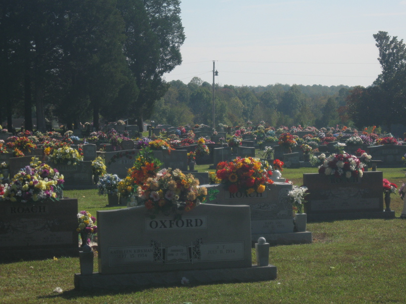

17 Oct 2008, Crump, TN
Yesterday and today were polar opposites. Yesterday I had ugly weather all day—rain & cold. Today it was beautiful and sunny (although still cool). Yesterday I got started early, rode hard (except for making two lunch stops & a grocery stop), and didn't stop until it was just about too dark to ride. Today I rode out of camp round 10am, took it easy all day and stopped for the night (barely 45 miles down the road) at 4pm. Yesterday I ended the day feeling the worst of the whole trip, having lost my cell phone. This morning I was notified that the phone had been found & turned in to the park office, leaving me feeling much relieved & over joined.
I picked up my absentee ballot in Saltillo, TN today—my only goal for the last week, basically.
Around 4 I rode into Crump, TN. I was looking to stop & use a restroom & maybe find some food. I almost gave up & pulled out once or twice, but I decided to go ahead & at least use the restroom at "United Steaks of America." As I was walking back out, I decided to get a cheesesteak, and the owner/chef, Armando, started asking me a ton of questions about my trip. He is a very dynamic & enthusiastic person, and kept saying things like, "I LOVE meeting people like you." The cheesesteak was very good, and as I finished up Armando asked if I was done for the day or if I was going to keep riding. I told him I hoped to get some more miles in.
"'Cause if you were done," he replied, "there's a couch back there you could sleep on & there's a shower & washer & dryer in the back." I declined again, thanking him for the offer, explaining that I got a late start that morning. I was also a bit intimidated. I headed back on the road, and started thinking about my stop options for the night. I'm getting close to the Shiloh battlefield, but the only campground there is private (i.e. overpriced), so I figured I'd be asking to camp in someone's yard.
Then I started thinking, "This is silly—I was offered a shower, washer & dryer, and a couch inside, and my only qualms are that I've not ridden very far today—something I profess to not care about—and that I'm a little uncomfortable with someone I'd just met." So I turned around & headed back.
Armando has been a gracious host. I've gotten a shower, run my laundry, & had another meal (this time a gyro—even better than the cheesesteak). I also was able to call Kim, my parents, & Lynn, and fill out & mail my absentee ballot (I'm two doors down from the post office—this place really is full service). My batteries are charging & my clothes are (or will be) clean. I may not need a rest day after this stop! That's much better than riding an extra 10 miles.
